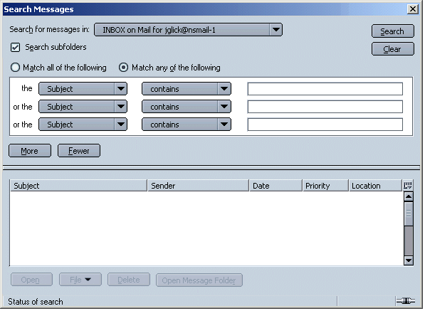
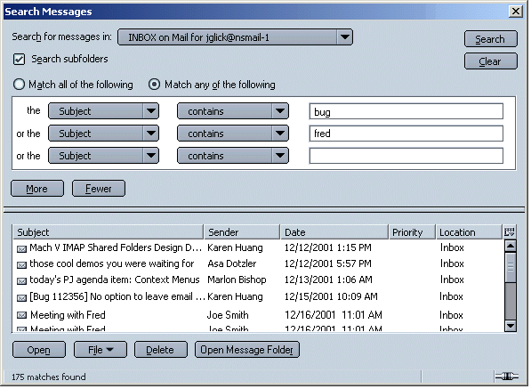
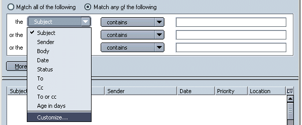
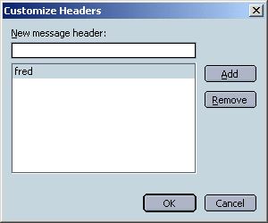
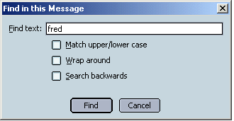

|
Buffy/Mozilla: Mail & News: Search |
UI Specification
|
|
Mail Search |
Last
Modification:
|
|
Author: Jennifer Glick |
Status: Implementable |
||||||||||
|
Quicklinks: Design Details |
Feature Team
|
The Search feature provides a method for users to find and act on mail and news messages that have already been received.
Searching mail messages, similar to creating filters, is aimed at
more intermediate users.
Fundamental Tasks
Intermediate Tasks
- Search in a particular folder with one criteria
- Search an account with one criteria
- Open messages from a search result
- Delete messages from a search result
- Move/copy messages from a search result
Advanced Tasks
- Complex searches with multiple criteria
- Define and use custom headers
Access to the Search Dialog from the Main Mail window or Standalone Message window:
Edit Menu
Tools Menu
Find in This Message... Ctrl+F
Find Again Ctrl+GSearch Messages... Ctrl+Shift+F
"Find in Message..." and "Find Again", are used to search a specific message that is currently open or has focus. "Search Messages" opens the "Search Messages" dialog used to search a specific Mail or News account or Mail folders for messages.
The Search window is resizable.
This dialog is context sensitive. If a specific Mail folder or Mail/News account within Mail had focus when the user selected "Search Mail/News Messages", the dialog should open with the mail folder or account already selected.

The search conditions widgets should work similar to the Mail Addressing widgets.
Light colored lines should appear between the rows and columns. The text fields should outline themselves when they have focus.
There is always at least one available search criteria row. When creating a new search, only one search row with widgets is displayed. When focus leaves the last criteria row (clicking Enter, clicking out of row, tabbing out, etc.) and the row is not empty, a new search criteria row with widgets is created. This area will scroll when more than 5 criteria rows are needed. The number of potential search criteria rows is unlimited. When the user clicks anywhere in a particular row, that row is highlighted. Highlighting will be very light so that the text is still very readable. Clicking the Delete button or Delete key will removed the row (and move the next row up, if there is one).
When a search is currently in progress, the progress icon in the statusbar should be animated and the cursor (when over the Search Dialog) should be an hourglass. The text in the status bar should indicate what action is currently occurring ("Opening Folder X", "Searching Folder X", etc.). As mentioned above, the "Search" button changes to "Stop" when a search is in progress so that a user can stop the current search if they want.
Once the search has completed, the results of the search are displayed in the lower half of the dialog. The Results Thread Pane works identical to the Mail Thread Pane. Header columns can be added/removed. Results can be sorted by header columns. The default sort order is Subject (A's at the top), but the dialog should remember the user's last settings. Ctrl and Shift keyboard commands are available to select multiple messages.
Column Headers - The default columns (and order) in the Results area should be: Subject, Sender, Date, Location, Column Widget. The "Location" column header displays the parent folder (of the message) only, not the path.
Note: the thread column, unread total in thread column, and total in thread column, are not available using the Column Widget. They are thread specific and have no value outside of thread mode. The unread and flag column are also not available (because any changes to their state would need to be tracked to the other mail windows as well).

No Results Found - If no matching search results are found:
Users can create and use their own custom headers by selecting "Customize..." from the header drop down list.

The "Customize Headers" dialog opens.

There are no limits to what or how many headers the user can enter.
Once a custom header has been added, it appears in the header drop down list. Customized headers are also available anywhere else in the product were headers can be selected from, such as Filters.
Conditions should be the same for Search and for Filters, with the following exceptions:
|
The |
Of the Message |
3rd Field |
|
Subject |
Contains |
Text Field |
|
Age in Days |
Is |
Text Field |
|
Date |
Is |
Current date with Increase/Decrease controls |
|
Priority |
Is |
Lowest |
|
Status |
Is |
Read |

From the Main Mail window or Standalone Message window, "Search" menu, "Find in This Message" menu item opens the Find in This Message dialog.
Ideas that were brought up as potential enhancements to the Search feature for future releases.
|
|
Priority |
|
Results Pane - Drag n Drop from results area. |
P1 |
|
Search Local vs. Search Server |
P3 |
|
Save a search ("Save as...") |
P5 |
|
Global Search - across all accounts. |
P5 |
|
A "re-filter" button that would apply to the search results. It would only operate on the messages matched by the search (the button would be disabled until the search is completed or stopped). Regardless of where the messages are currently filed, it would be run through the filter rules as if it were a new message. jharding@cig.mot.com (Josh Harding) |